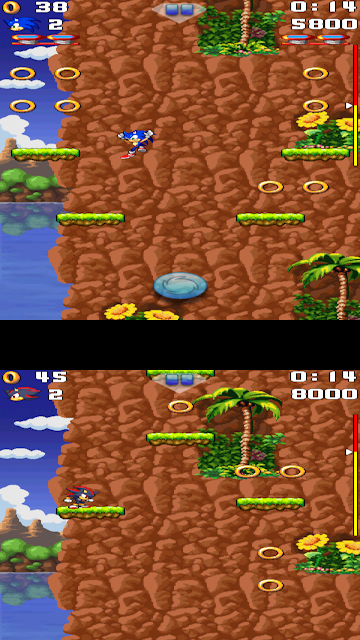
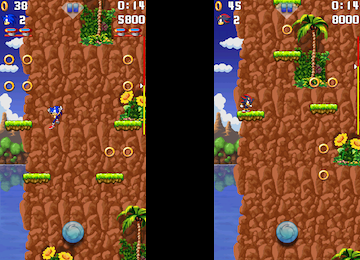
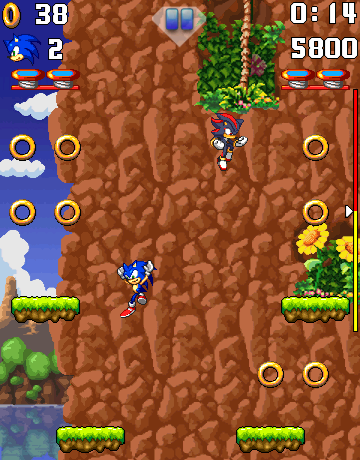

The goal of this project is to make the Multiplayer Mode enjoyable to play by solving the canvas issue and give this game mode purpose.
In fact, the Multiplayer Mode is actually present in the game, but you have to access it via the secret cheat code.
The main reason why this game mode is hidden is because of how it looks in gameplay.

As you can see, during multiplayer, there is a canvas that displays on the top-left of the screen.
This canvas is the other player's screen.
Obviously, this is a problem, considering that the small canvas hides a part of the main player's screen.
Down-below are different potential solutions to solve this issue.

SPLIT SCREEN:
The first solution would be to make each player canvas the same size by reducing the heights in half.
However, this setup is not suitable when the VIRTUAL PAD option is OFF.

LANDSCAPE VIEW:
The second solution would be to make the game view landscape, so we can fit 2 canvases on the same screen.
However, like the split screen idea, this setup is not suitable when the VIRTUAL PAD option is OFF.
Also, it makes the canvas way smaller in size.

2 CHARACTERS ON THE SAME CANVAS:
The better solution would be to make a function that makes the other player's character appear on one player's screen, like in most handheld multiplayer games.
But the problem is that this idea is way too complicated to make it possible.